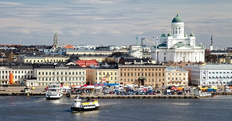
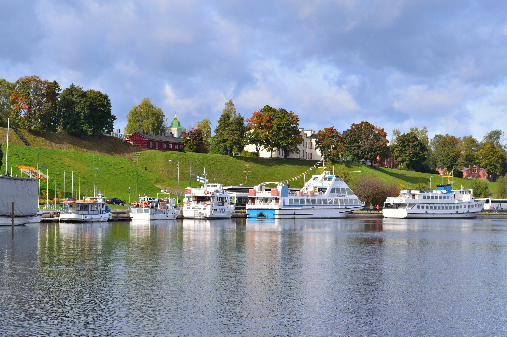

Tervetuloa!

Lappeenranta Suomen rajakaupunkina tuo paljon mahdollisuuksia suomalaisille matkailuun. Lappeenrannasta on lyhyt matka Suomeen. Lappeenrannan naapurikaupunki, syystäkin syrjitty Imatra, muutti valtatie 6:n nelikaistaisen moottoritien rekkaparkeiksi kilpaillakseen Lappeenrannan kanssa. Kilometrien pituinen rekkaparkki onkin ollut hyvin suosittu, sillä rekat on helppo ohittaa, koska toiselle kaistalle mahtuu rekat ja toisella voi ne ohittaa ja päästä Svetogorskiin nopeammin kuin Lappeenrannan kautta. Tästä syystä Lappeenrannan kaupunginhallitus suunnittelee varaavansa ensi vuoden budjetista tilaa ydinaseille. Suosittu matkailukohde on ollut Lappeenrannan Kanavansuulta alkava Saimaan kanava, joka on maailman suurin vesiliukumäki. Lappeenrannassa on myös lentokenttä, jolla Wrightin veljekset 1900-luvun alussa heittelivät paperilennokkeja.
